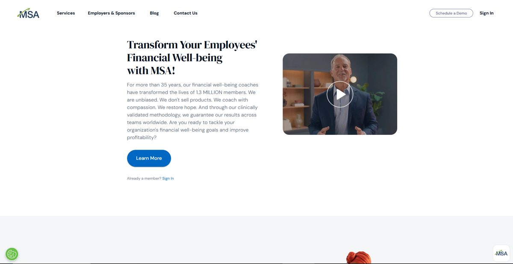
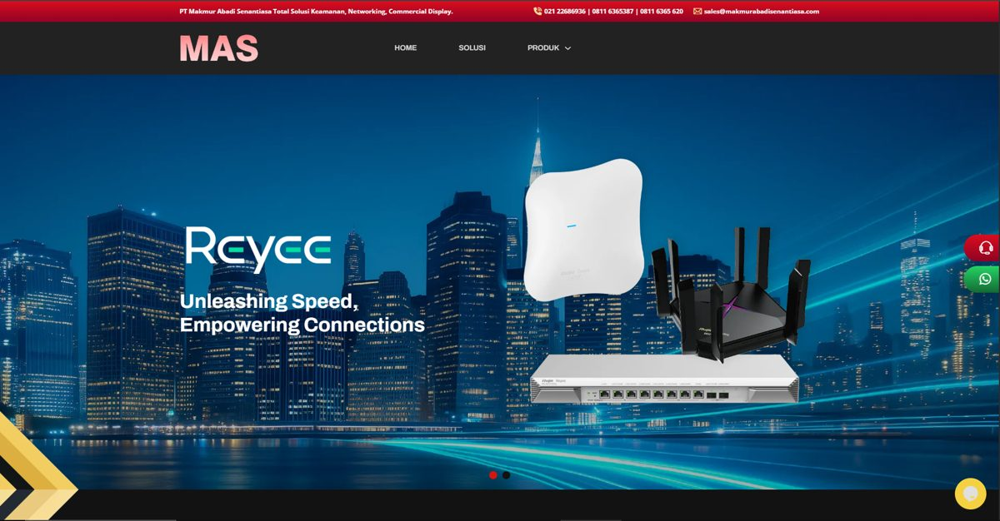
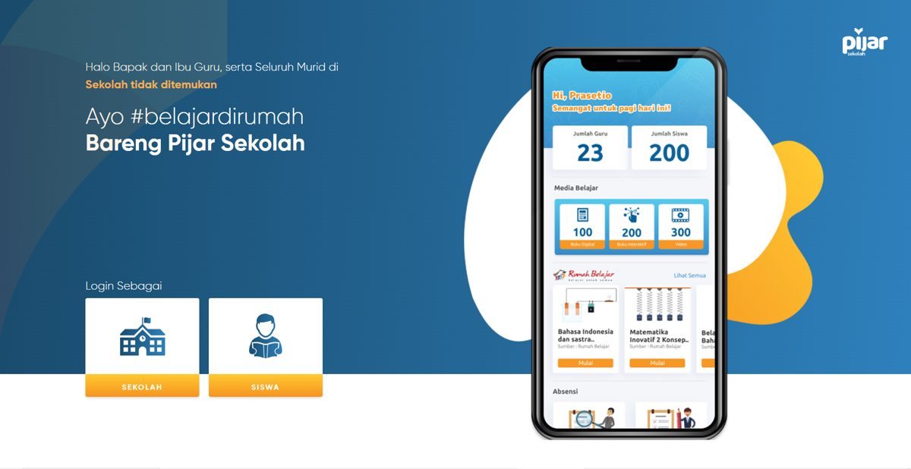
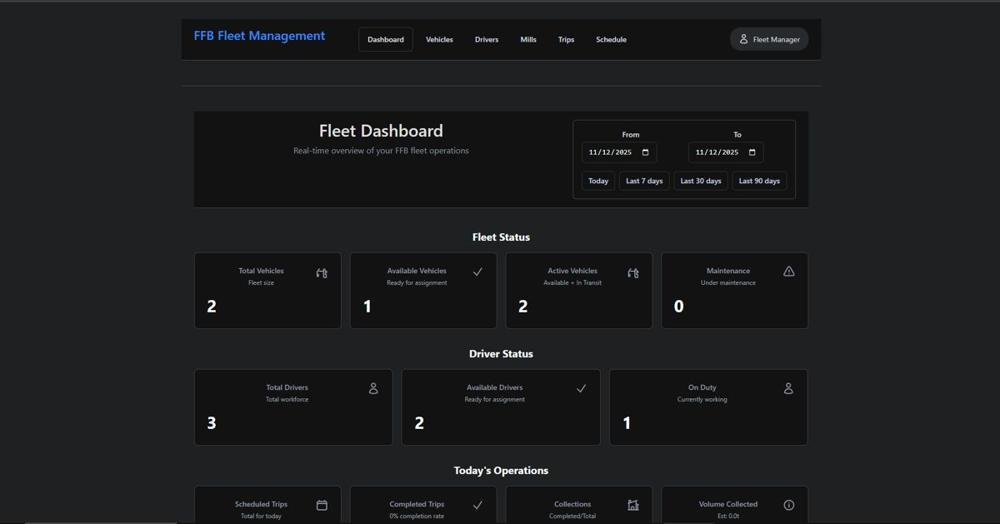

Approval workflows
Draft, Pending Approval, then Approved or Rejected, with a full audit trail in the chatter.
Odoo Developer (Odoo 19 Enterprise) and Full-Stack Developer
I turn business processes into working software: ERP modules, web applications, and the workflows that connect them.
Open to remote roles · based in Medan, Indonesia (GMT+7)
4+
years in software development and technical training
20+
business processes across two custom Odoo 19 modules
500+
staff supported across branches as System Engineer
50+
bootcamp students mentored at Telkom Indonesia
Featured case study · Odoo 19 Enterprise
Odoo Developer at an Odoo Implementation Partner (Thailand, remote) · Jul to Oct 2026. A group company ran acquisition and project work largely outside its systems. I built two custom modules that moved the whole lifecycle into Odoo, turning 170+ pages of SOPs into working workflows.
Module 1 · Acquisition Project Management (on CRM)
Module 2 · Project Implementation (on Project, Sales, Inventory, Purchase)
Draft, Pending Approval, then Approved or Rejected, with a full audit trail in the chatter.
Create, edit and deactivate requests for prospects, customers and pricelists.
Configurable rules that auto-schedule meetings and calls per pipeline stage.
Wizards for feasibility studies, MoU/MoA and contracts, then handover to delivery.
Timesheets, purchase requests from tasks, and budget-vs-actual monitoring.
A closing wizard that checks open PRs, expenses and invoices before close.
Stack: Odoo 19 Enterprise · Python ORM · XML views · PostgreSQL · Multi-company. Client name withheld; happy to walk through the modules in an interview.
Experience
Jul 2026 to Oct 2026 · Remote
Dec 2025 to Jun 2026 · Vientiane, Laos
Jun 2025 to Sep 2025 · Remote (USA)

Aug 2024 to Jun 2025 · Medan

Mar 2022 to Dec 2023 · Jakarta (hybrid)

2021 to 2023
Selected projects
Scores an uploaded CV against a job description with a rule-based AI workflow and async evaluation.
Natural-language search for local businesses, with results on an interactive map.
Vehicles, drivers, mills and trip scheduling for fresh-fruit-bunch transport in palm-oil operations.

Production-style backend for tasks, history, comments, notifications and background jobs.
Accounts-receivable management web app built with the Next.js app router.
An API route using Playwright that extracts a page's title, meta description and first H1.
An approval-workflow module with OWL components, QWeb reports and tests. In progress.
Stack
Recognition
Before working professionally, I was building apps for competitions and teaching others to build theirs.
Contact
Open to Odoo Developer and Full-Stack Developer roles: remote or on-site, in Indonesia or abroad.